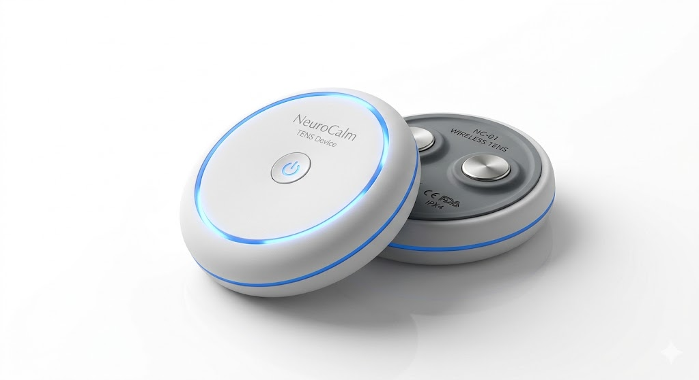

My digital scrapbook.
I work as a senior inventor at Iprova, and I like to tinker and build. This is my space to document ideas, projects, and anything I want really.
Recent
Browse all →Far UVC Glasses
A wearable biosecurity concept - using 222nm Far UVC light to sterilise the air you breathe, triggered by a biosecurity course and a pessimism about whether people actually wear masks properly.

KnotPulse
A concept for targeted resonant electrical muscle therapy - using frequency sweeps to selectively activate and release deep muscle knots with minimal discomfort.
LLM Red-Teaming Simulation
A structured red-teaming experiment pitting frontier LLMs against each other - jailbreaking, prompt injection, system-prompt extraction, and 2v1 coordination attacks. Documented results across GPT-4o, Claude, Gemini, and DeepSeek.
TechConnect
A concept for a cross-industry B2B technology exchange platform - using double-blind discovery protocols so enterprises can securely scout and trade solutions across disparate domains without exposing proprietary data.
Multi Agent Arena
A sandbox where AI agents compete, deceive, and reason about each other's capabilities. Emergent alliances, elimination votes, and an AGI identity game — with full private reasoning visible to the observer.
Fitness Insights
Years of workout history buried inside a Google Calendar — logged inconsistently across different naming conventions and mixed in with thousands of unrelated events. Extracted, classified, and analysed entirely from scratch.
3D-Printed 3-Way Speaker System
A fully active stereo speaker system built in a London flat using a desktop 3D printer. Plaster-loaded composite cabinets, JAB5 DSP amplifier boards in cascade, tuned to 40Hz.
Nixie Tube Clock Amplifier & Speakers
A post-graduation build — stereo 2-way bookshelf speakers using the Dayton Audio PS95-8, paired with a handbuilt nixie tube clock and digital amplifier module.